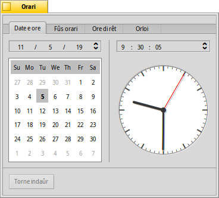
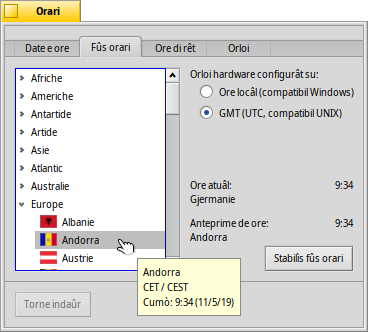
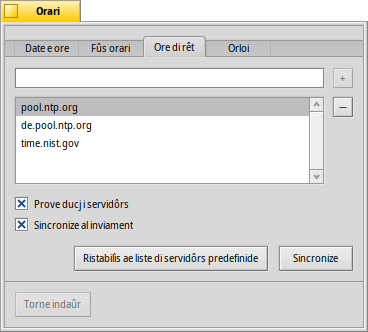
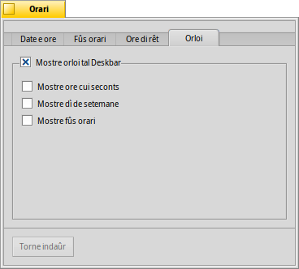

Ore
Ore
| Deskbar: | ||
| Posizion: | /boot/system/preferences/Time | |
| Impostazions: | ~/config/settings/networktime settings - Dutis lis impostazions che a rivuardin la sincronizazion de ore vie rêt ~/config/settings/RTC_time_settings - La impostazion dal orloi hardware (locâl o GMT) ~/config/settings/Time settings - La configurazion dal fûs orari ~/config/settings/Time_preflet_window - La posizion dal barcon dal panel e vie indenant. |
Il panel des preferencis de Ore si divît in cuatri schedis:
 Date e ore
Date e ore

De bande di çampe, tu puedis stabilî il dì dal mês fasint un sempliç clic tal calendari. Tu puedis cambiâ il mês e l'an fasint clic su di chei e doprant lis frecis sù/jù che a son a diestre opûr lis frecis de tastiere.
Compagn a diestre, tu stabilissis la ore. Opûr spostant a man lis speris dal orloi.
Fûs orari

Al baste cjatâ e sielzi il to paîs inte liste dai continents e fracâ . Pai paîs cun plui di un fûs orari tu varâs di pandi la liste ancjemò di un nivel.
A diestre tu cjatarâs la ore dal fûs orari atuâl e la anteprime di chel che tu âs sielt.
In plui de bande di diestre e je une impostazion pal orloi hardware dal to computer. Si à dôs modalitâts pal orloi:
| par visualizâ la tô ore locâl, che di norme tu vuelis se tu âs l'inviament dopli (dual-boot) ancje par Windows. | ||
| Par visualizâ il timp median di Greenwich (Greenwich Mean Time), che e je la impostazion compatibil cun UNIX. |
Ore di rêt
Stabilî la date e la ore a man e je une operazion une vore sorpassade se si è tacâts a internet. A esisitin servidôrs publics che a dan il segnâl orari plui precîs.
Cui botons / tu puedis zontâ/gjavâ i servidôrs NTP ae/de liste.
Lis caselis di selezion sot a disin al sisteme: “”, vâl a dî sincronize no dome cun chel cumò selezionât, e “”, vâl a dî che tu puedis stâ sigûr che l'orloi al mostrarà simpri la ore juste.
Tu puedis fâ se par erôr tu âs eliminât un servidôr NTP che al funzionave e fâ par sincronizâ a man il to orloi. Si pues rivâ a sincronizâ ancje de rie di comant (o cuntun script):
Time --update
Orloi

La ultime schede e mostre lis opzions dal orloi mostrât intal Deskbar. Lì tu puedis disabilitâ dal dut l'orloi cu la casele di selezion plui in alt. Chês che a restin si spieghin di bessolis.
In ogni schede al è un boton che al puarte indaûr aes impostazions che a jerin ativis cuant che si à inviât lis preferncis de Ore.